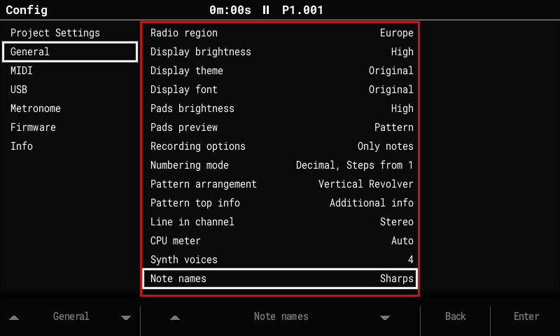

More features¶
Note names¶
Config > General > Note names: Sharps / Flats / Auto. Auto spells notes the way the project's scale does, modes included: C Mixolydian shows B♭, not A♯. Display only.

Piano pads¶
Config > General > Pad layout: Stock / Piano. Piano turns the pads into two keyboards that light up as ones, laid out as on grid controllers: each pair of rows is a keyboard, with the white keys along the lower row and the black keys in the row above, each black key over the white key to its right.
· C# D# · F# G# A# · C# D# · F# upper keyboard
C D E F G A B C D E F G
· C# D# · F# G# A# · C# D# · F# lower keyboard
C D E F G A B C D E F G
- Each keyboard spans an octave and a fifth; the upper one is the same keyboard an octave higher.
- The pads marked
·(over C and F, where a piano has no black key) are dark and play nothing. - The bottom-left C is the C of the project's root note octave. To play higher or lower, change the root note.
- The lights show the keyboard: the scale's root brightest, white keys lit, black keys a little dimmer. Keys outside the project's scale stay playable but are barely lit, so the scale shows on the keyboard.
- It works wherever the pads play notes: the pattern editor's Note column, Sample Playback, the instrument pages, the synth browser, the Sample Editor and the recorder. In the pattern editor the step's note (and, with Pads preview, the notes on the current line) lights at full brightness.
- Pads that do something else keep their own lights: the Instr and FX columns, Performance, the synth edit page, and Beat Slice instruments (one pad per slice).
- Stock is the default and keeps the original layout. The setting is global, not saved with the project.
Chord entry¶
In the pattern editor's edit mode (stopped), pads pressed while another note pad is still held make a chord: the first note goes on the cursor's step and the cursor moves on as usual; each further note goes on the same step, one track to the right. Hold the chord's pads together, release them, and play the next chord.
- One Undo removes the whole chord.
- A track that can't play the current instrument (a MIDI track for a sample instrument) ends the chord there.
- Live recording (Rec while playing) already spreads a chord over the next free tracks.
Slices to pattern¶
Chop a break, then press one key to get a pattern that plays it. On the Sample Playback screen (Slice or Beat Slice mode), open the More page (F6):
| Key | Does |
|---|---|
| Steps (F4) | How many steps the sample lasts. The guess is its length at the song tempo, rounded to 1, 2, 4 or 8 bars; turn the encoder if it guessed wrong (a 2-bar break at 92 BPM in a 140 BPM song reads as 4 bars). |
| To Pattern (F5) | Writes the slices on the pattern's current track (the one the cursor was on). |
- Slice i goes on the step nearest where it starts, as note 24 + i, with the steps in between empty, so each slice plays on to the next one. The trigs repeat every Steps steps to the end of the track.
- The track is cleared first; it asks when the track had steps. Undo in the pattern editor brings them back.
- A Slice instrument turns Beat Slice, so each note plays its own slice.
- At another song tempo the slices play at their own speed and pitch (as REX loops do): a faster song cuts each slice short at the next trig, a slower one leaves a short gap after it. The pattern keeps its length; a sample longer than the track is placed once, cut at the track's end.
- Slice first: Auto (F1) for drum breaks, Evenly (F2) for loops in time.
The 2.x features (from upstream)¶
The 2.x line brings the newer Tracker features to the original hardware. In short:
Tracker Mini project compatibility¶
- Projects are saved in the Tracker 2.2.1 format: 16-track patterns, the three synth slots, track names and mutes for tracks 13–16.
- Synth patches use the Mini's
.patchfiles, stored with the project and in a library atPatches/<ENGINE>/. All 299 Mini factory patches load and save back unchanged.
16 tracks¶
- Tracks 13–16 work like MIDI tracks 9–12: notes, MIDI channels, CC A–F, pitch bend, velocity, mute and solo. Performance Play mode, Pattern length and Step repeater act on them too.
- Pattern pages through all 16 tracks; Song shows a scrolling 12-track window. Fill, copy and paste work across all 16.
Synth engines (instruments S1–S3)¶
- Three synth slots, played from any track as instruments S1–S3.
- Engines: ACD (acid bass and lead, 24 dB and ladder-style filters, glide), VAP (virtual-analog poly, morphing oscillators, hard sync, 15 filter types, a 6-slot modulation matrix), PERC (a drum kit), FAT (unison supersaw), WTFM (two-operator wavetable FM), and in this fork DX7.
- Macros: FX columns A–F drive macros 1–6, and Volume drives macro 7.
- Voices: a shared pool of 4 by default, adjustable in Config > General > Synth voices (1–8). If the audio gets close to its limit, only synth voices are cut; sample tracks never are.
- Screens after the Mini's layout: Synth Parameters, Synth Macros, Edit Patch (sections on the pads; Save, Save As, Init), the Load Patch popup with Preview, and the synth level columns on Global Mixer page 3.
- Exports include separate stems
synth_1..3.wav.
Export sample rate¶
Config > General > Export sample rate: 44.1 kHz (default) or 44117 Hz. The Tracker's audio runs at 44,117 Hz. At 44.1 kHz, exported songs, patterns, stems and renders are converted to a standard 44,100 Hz WAV, so they play in time in any DAW. 44117 Hz writes the Tracker's own rate, as the original firmware does.
Stereo samples¶
Stereo WAVs keep both channels and play in stereo in one-shot, loop, slice and beat-slice modes; pan works as balance.
CPU meter¶
Config > General > CPU meter: Auto, Always or Off shows the audio load in the title bar.
USB Storage mode¶
Config > USB > USB Storage: On shows the SD card on a connected computer as a USB drive, as on the Tracker Mini, so projects, samples and patches can be copied without taking the card out.
- Playback stops and the project is saved first. Keep the power and the cable connected while files are copied.
- To finish, eject the drive on the computer, then press Exit (or set the row back to Off). The project reloads from the card.
- It's always Off after power-on. About 1 MB/s (full-speed USB). USB MIDI and the serial log keep working.
- On Windows the Tracker may appear once as a new device (new COM/MIDI port).